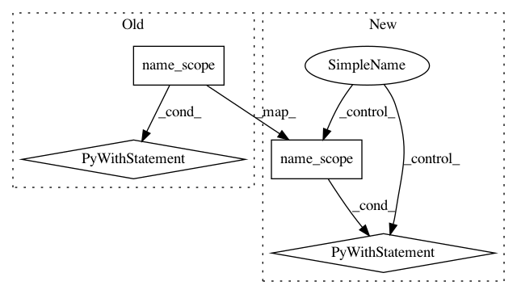

94855fb1910ff6b9dd8306dafd097ac9f93eb57b,kfac/python/ops/utils.py,,cross_replica_sum,#Any#Any#,374
Before Change
Raises:
ValueError: If called outside of TPU context.
with tf.name_scope(name, "cross_replica_sum", [tensor]):
num_shards = get_num_tpu_shards()
if num_shards is None:
raise ValueError(
"Cannot take cross_replica_sum() outside of TPU Context.")
if num_shards == 1:
return tensor
return tf.contrib.tpu.cross_replica_sum(tensor)
def get_replica_id():
Returns an id number for the current replica, counting from 0.
// This code is based on TensorTracer._add_replica_id_to_graph().
After Change
num_replicas = get_num_replicas()
if num_replicas and num_replicas > 1:
with tf.name_scope(name, "cross_replica_sum", nest.flatten(structure)):
return nest.map_structure(tf.contrib.tpu.cross_replica_sum, structure)
else:
return structure
In pattern: SUPERPATTERN
Frequency: 3
Non-data size: 4
Instances
Project Name: tensorflow/kfac
Commit Name: 94855fb1910ff6b9dd8306dafd097ac9f93eb57b
Time: 2019-08-13
Author: jamesmartens@google.com
File Name: kfac/python/ops/utils.py
Class Name:
Method Name: cross_replica_sum
Project Name: wenwei202/iss-rnns
Commit Name: 4a4b8bf5168b85e1e14e0489859bc99757d2eac5
Time: 2016-10-09
Author: seominjoon@gmail.com
File Name: basic/model.py
Class Name:
Method Name: get_multi_gpu_models
Project Name: tensorflow/kfac
Commit Name: 94855fb1910ff6b9dd8306dafd097ac9f93eb57b
Time: 2019-08-13
Author: jamesmartens@google.com
File Name: kfac/python/ops/utils.py
Class Name:
Method Name: cross_replica_mean